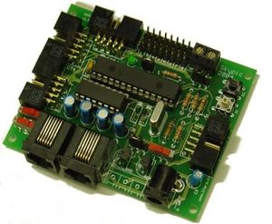
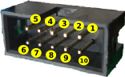
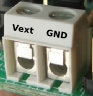
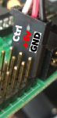
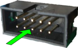
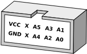
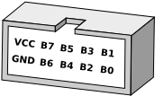
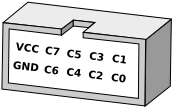
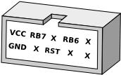

Contenido
[ocultar]Introducción


La SKYPIC es una tarjeta entrenadora para las familias de microcontroladores PIC 16F87X y 18FXXX de 28 pines. Se trata de un sistema de desarrollo hardware muy fácil de usar, con el que se pueden implementar robots y sistemas domóticos. Es una placa perfecta para el prototipado rápido.
Es la tarjeta empleada en los robots Skybot y Cube Revolutions, entre otros.
Características generales
- Reducidas dimensiones: 8.1 x 6.1 cm
- Sólo contiene el hardware mínimo para que funcionen el PIC y las comunicaciones serie.
- Conectores acodados para acceder fácilmente a todos los pines del PIC
- Conexión tipo torre (apilando varias placas)
- Comunicaciones serie usando un conector telefónico RJ12
- Es Hardware Libre. Se conceden permisos para estudiar, modificar, distribuir y fabricar la placa. Todos los planos están disponibles.
- Soporta la grabación mediante el el ICD2 de Microchip
- Led de pruebas (opcional, conectado al pin RB1)
- Pulsador de pruebas (opciona, conectado al pin RB0)
- Conexión directa de hasta 8 servos del tipo Futaba 3003 (conexión al puerto B)
- Multiplataforma: Se puede trabajar desde sistemas Linux, Windows y Mac.
Características técnicas
- Microcontroladores PIC de 28 pines de las familias 16F8X y 18FXXX.
- Alimentación: entre 4.5 y 6 voltios
- Conector alimentación: clemas y jack
- 4 pines para la conexión directa de periféricos I2C.
- Resistencias de Pull-Up de 4k7 del I2C actibable con jumpers
- Cristal de 20MHz
- Reset hardware mediante señal DTR del la conexión RS232 (se activa/desactiva mediante un jumper)
- Alimentación (VCC) y masa (GND) en todos los conectores acodados para la fácil conexión de periféricos
|
Hoja de datos del PIC16F876A, de Microchip |
Disposición de Componentes

- En total hay cuatro conectores acodados de 10 pines:
- Puerto A: Pines del puerto A del PIC
- Puerto B: Pines del puerto B del PIC
- Puerto C: Pines del puerto C del PIC
- Puerto P: Puerto de programación para grabar el pic
- 8 conectores de tres pines para los servos
- Pulsador para Reset
- Pulsador para pruebas (conectado al pin RB0)
- Led de pruebas (conectado al pin RB1)
- Alimentación: mediante conector tipo jack o clema doble.
- Clema doble para la alimentación de los servos (opcional)
- Conector telefónico RJ11 para la conexión serie (RS232)
- Conector telefónico RJ11 para la conexión del ICD2
| Alimentación | Puertos A,B,C y Prog | Vmot | Servos |
|---|---|---|---|
 |
 |
 |
 |


Jumpers de configuración
En la Skypic existen 7 jumpers que permiten configurar su funcionamiento. Tres de ellos son de tres pines. Se puede colocar en dos posiciones posibles, uniendo los pines (1-2) ó (2-3). Los cuatro restantes son de dos pines y pueden estar puestos(ON) o quitados(OFF). En la siguiente tabla se muestra su uso y la posición en la que están por defecto.

| Jumper | Defecto | Descripción |
|---|---|---|
| JP1 | ON | Pulsador de pruebas: Conectado(ON) / Desconectado(OFF) |
| JP2 | ON | Led de pruebas: Conectado(ON) / Desconectado(OFF) |
| JP3 | 2-3 | Modo de funcionamiento: Grabación(1-2) / Ejecución(2-3) |
| JP4 | 1-2 | Reset software: Activado(2-3) / Desactivado ON(1-2) |
| JP5 | 2-3 | Alimentación servos: Interna(2-3) / Externa(1-2) |
| JP6 | ON | I2C: Pull-up en SDA(ON) / Sin Pull-up(OFF) |
| JP7 | ON | I2C: Pull-up en SDL(ON) / Sin Pull-up(OFF) |
Descripción detallada de las configuraciones
- Pulsador de pruebas: Cuando el jumper JP1 está puesto, el pulsador estará conectado al pin RB0. En caso contrario, este pin estará "al aire" y se podrá utilizar para cualquier otro uso.
- Led de pruebas: Cuando jumper JP2 está puesto, el led estará conectado al pin RB1. En caso contrario el pin permanecerá "al aire" y se podrá utilizar para cualquier otro uso.
- Modo de funcionamiento: (
 ¡¡SOLO USUARIOS AVANZADOS!!). El jumper JP3 permite establecer el modo de funcionamiento. Este jumper sólo se debe cambiar cuando se quiera grabar a bajo nivel el PIC, como por ejemplo para poner el
Bootloader. La skypic estará habitualmente en modo ejecución lo que permite que el PIC pueda ejecutar código normalmente. Este jumper tendrá que estar colocado en las posiciones (2-3). Si en vez de un jumper lo que se tiene es un switch, la parte superior deberá estar hacia el lado que pone PRG. Cuando el jumper está en modo de programación(1-2), la tensión que le llega al micro estará entre 9 y 12v, lo que permitirá que entre en el modo de grabación al pulsar el reset. A partir de entonces se puede realizar la grabación de firmware a través del protocolo ICSP[1].
¡¡SOLO USUARIOS AVANZADOS!!). El jumper JP3 permite establecer el modo de funcionamiento. Este jumper sólo se debe cambiar cuando se quiera grabar a bajo nivel el PIC, como por ejemplo para poner el
Bootloader. La skypic estará habitualmente en modo ejecución lo que permite que el PIC pueda ejecutar código normalmente. Este jumper tendrá que estar colocado en las posiciones (2-3). Si en vez de un jumper lo que se tiene es un switch, la parte superior deberá estar hacia el lado que pone PRG. Cuando el jumper está en modo de programación(1-2), la tensión que le llega al micro estará entre 9 y 12v, lo que permitirá que entre en el modo de grabación al pulsar el reset. A partir de entonces se puede realizar la grabación de firmware a través del protocolo ICSP[1].
- Reset software: Al hacer reset el PIC se reinicia y comienza a ejecutar el programar desde el principio. Existen varias formas de hacer reset de la Skypic. Una es apretando el pulsador de reset. El otro es mediante software. Cuando el jumper JP4 está en posición (1-2) el reset software está deshabilitado. Esta es la posición por defecto. Cuando el jumper está en posición (2-3) el reset software estará activado. Ahora se puede hacer reset utilizando la señal DTR del puerto serie. De esta manera, si la skypic está conectada al PC, al desactivarse el DTR se realizará un reset. Esto lo pueden utilizar las aplicaciones software para reiniciar la skypic. Por ejemplo para cargar programas automáticamente cuando se está usando el Bootloader, o parando un robot que se nos haya descontrolado ;-)
- Alimentación de los servos: A la skypic se le pueden conectar directamente hasta 8 servos del tipo Futaba 3003 o compatibles. Su tensión de alimentación está comprendida entre 4.5 y 6 voltios. Cuando se conectan a la Skypic, la alimentación se puede tomar bien directamente de la misma que usa la Skypic o bien de una externa, que se introducirá por las bornas situadas al lado del jumper JP5. Cuando el jumper esté en la posición (2-3) se usa la alimentación interna y cuando está en la posición (1-2) la externa.
- Pull-ups del I2C: Los jumpers JP6 y JP7 permiten conectar o desconectar resistencias de Pull-up a las líneas SDA y SDL del bus I2C. Según el periférico que se conecte a este bus habrá que activarlas o no.
Puertos
|  |
La imagen de la derecha muestra cómo son los conectores de los puertos para la correcta interpretación de las siguientes figuras: |

| Puerto A | Puerto B | Puerto C | Puerto Prog |
|---|---|---|---|
|  |
 |
 |
 |


La asignación de pines se puede ver en las siguientes tablas:
Puerto A
| PIC 16F876A | PIC 18F252 | Descripción | |
|---|---|---|---|
| A0 | RA0/AN0 | RA0/AN0 | Entrada-Salida digital / Entrada analógica |
| A1 | RA1/AN1 | RA1/AN1 | Entrada-Salida digigal / Entrada analógica |
| A2 | RA2/AN2/Vref-/CVref | RA2/AN2/Vref- | Entrada-Salida digital / Entrada analogica/Voltaje de referencia - |
| A3 | RA3/AN3/Vref+ | RA3/AN3/Vref+ | Entrada-salida digital / Entrada analógica / Voltaje de referencia + |
| A4 | RA4/TOCKI/C1OUT | RA4/TOCKI | Entrada-salida digital |
| A5 | RA5/AN4/#SS/C2OUT | RA5/AN4/#SS/LVDIN | Entrada-salida digital |
Puerto B
| PIC 16F876A | PIC 18F252 | Descripción | |
|---|---|---|---|
| B0 | RB0/INT | RB0/INT0 | Entrada-Salida digital |
| B1 | RB1 | RB1/INT1 | |
| B2 | RB2 | RB2/INT2 | |
| B3 | RB3/PGM | RB3 | |
| B4 | RB4 | RB4 | |
| B5 | RB5 | RB5/PGM | |
| B6 | RB6/PGC | RB6/PGC | |
| B7 | RB7/PGD | RB7/PGD |
Puerto C
| PIC 16F876A | PIC 18F252 | Descripción | |
|---|---|---|---|
| C0 | RC0/T1OSO/T1CKI | RC0/T1OSO/T1CKI | |
| C1 | RC1/T1OSI/CCP2 | RC1/T1OSI/CCP2 | |
| C2 | RC2/CCP1 | RC2/CCP1 | |
| C3 | RC3/SCK/SCL | RC3/SCK/SCL | |
| C4 | RC4/SDI/SDA | RC4/SDI/SDA | |
| C5 | RC5/SD0 | RC5/SD0 | |
| C6 | RC6/TX/CK | RC6/TX/CK | |
| C7 | RC7/RX/DT | RC7/RX/DT |
I2C
| PIC 16F876A | Descripción |
| Pin1 | VCC (+5v) |
| Pin2 | SDA |
| Pin3 | SCL |
| Pin4 | GND |